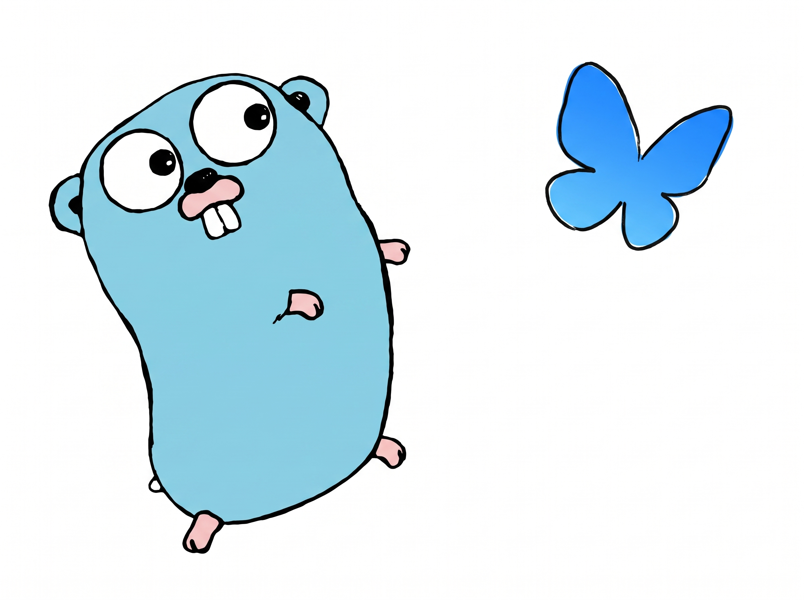
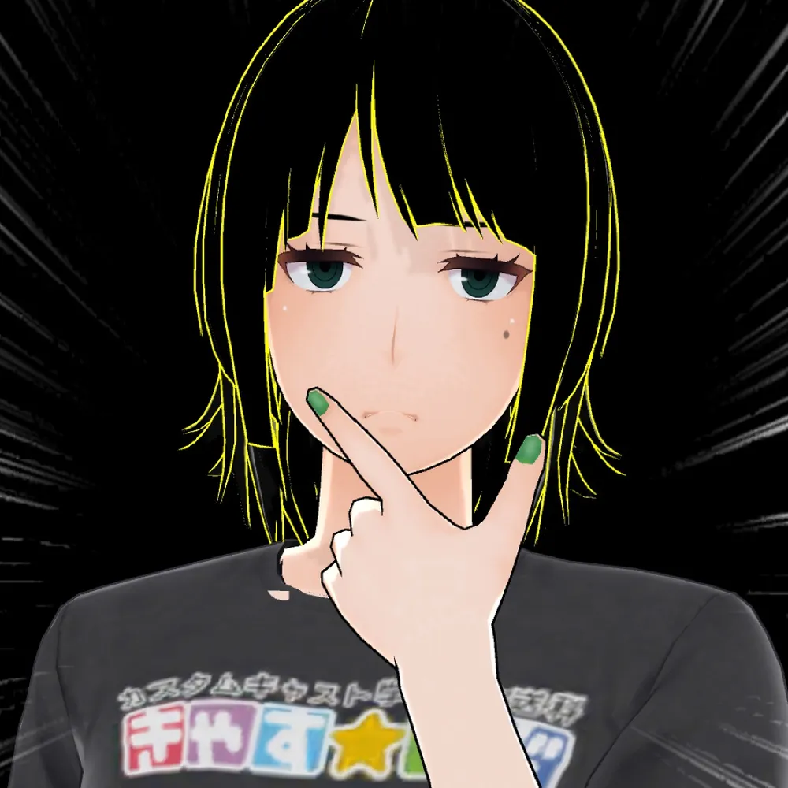
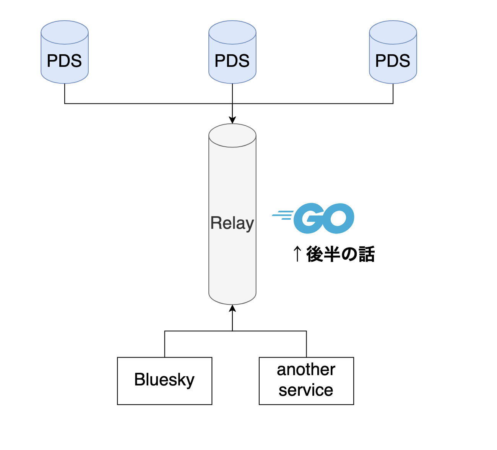

01
ユーザーデータを
パートナー企業に売却
ユーザーが生み出した投稿や行動データを、企業の収益源として外部に売る。

@taumu.bsky.social
UGC（ユーザーが作る投稿）を集め、そのデータから得られる利益を運営企業が独占できる構造だった。
ユーザーが生み出した投稿や行動データを、企業の収益源として外部に売る。
何を消し、何を見せるかを運営が一方的に決める。ユーザーは選べない。
外部からデータにアクセスする手段を絞り、データを囲い込む。
データの管理権は利用者側に置く一方、全体のデータを処理する計算リソースはRelayに集約した。
PDSを選び、必要なら別のPDSへデータを移行できる。
RelayがPDSからのイベントを集め、サービスへ配信する。

AT Protocol, x402などインターネットをよくしそうな技術に興味あり
Blueskyの非公式デザインシステムをAIに読み込ませてHTMLを生成しました。
一つのDIDを保ったまま、データを別のPDSへ移行できる。
各PDSから更新を受け取り、アプリが利用できるストリームとして配信する。
PDSのイベントを集約
購読用のストリームを提供
アプリはBlueskyのAPIを使うか、独自にRelay購読用のストリームを運用する。
「分散型」が何を指すのか、仕組みごとに整理する。
別のもの。AT Protocolはデータ主権を支えるプロトコル。Blueskyはその上にあるSNSで、Bluesky社はRelayなどの基盤も提供する。
はい。Relayは集約型。データ主権を優先し、それ以外の部分では使いやすさとの両立を図っている。
単一事業者への依存はリスクになる。アカウント管理を第三者機関へ移管できれば、特定企業への依存を減らせる。
SNSは広告で稼ぐ場から社会インフラへ変わるべきだと考える。有料プランやサードパーティアプリのロイヤリティも収益源にし、利用者・開発者・運営者に利益が回る形を目指す。

BlueskyはTypeScriptとGoを組み合わせている。
Relayのように大量のイベントを並行処理する基盤には、Goを使う。
イベントを並行して受け取り、処理し、配信する。Goの並行処理機能が生きる領域。
Relayは分散したPDSからイベントを受け取り、用途の異なるサービスへ流す。
タイムラインやプロフィールの状態を作るため、Relayを直接購読する。
投稿イベントを使った自動モデレーションや、イベント量の監視に使う。
内部サービスへの分配、条件で絞ったイベント配信、Webhook通知にも使われる。
並行処理はRelayの実装の中心にある。
共有channelからタスクを受け取り、複数のworker goroutineが処理する。
バッファが満杯の購読者には待たずに送信を打ち切り、遅い購読者を切り離す。
CSPという並行処理理論に基づき、goroutineとchannelで処理間の通信を組み立てる。
この両立は、メジャーなプログラミング言語でもあまりない気がする。
接続とイベント受信をイテレータにまとめ、呼び出し側はイベント処理に集中する。
接続、イベントの受信、終了処理をまとめる。
breakした時に、イテレータ側のdeferで確実に後始末できるのもGoの特徴。